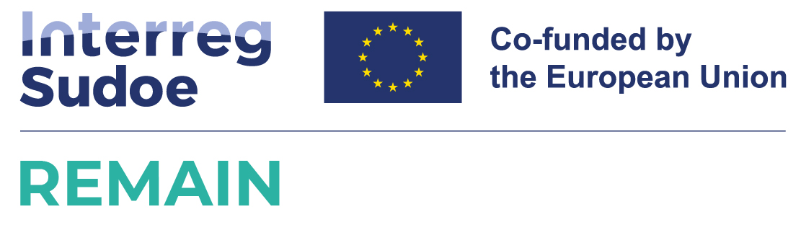
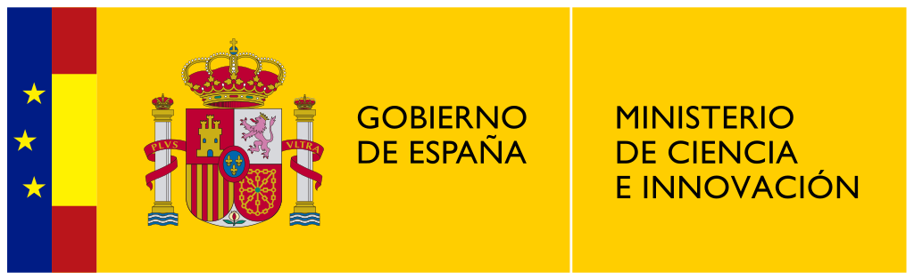
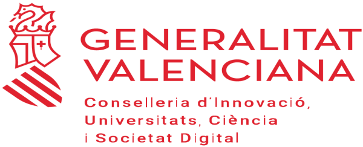
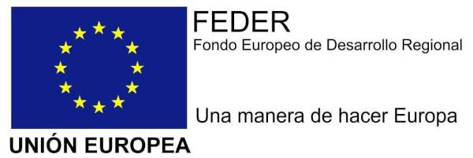
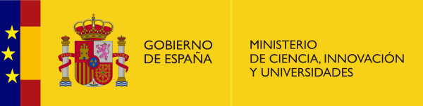

- Principal investigator in the University of Alicante: Pablo Gil Vázquez.
- Funding entity: Projec cofunded by Interreg Sudoe Programme through the European Regional Development Fund (ERDF).
- Benefactors: Asociación de investigación para la industria del calzado y conexas (INESCOP, Coordinador),
University of Zaragoza, University of Alicante, University of Coimbra, Clermont Auvergne INP, Federación de Industrias del Calzado Español (FICE),
Sma-RTy SAS, Automática y Control Numérico SL, AIDA CCI (Cámara de Comercio e Industria de Distrito de Aveiro).
- Duration: 01/01/2024 - 31/12/2026 (3 years).
- Granted/elegible cost: 1.929.050€ / 1.446.787,5€.
- Granted/elegible cost to the UA: 234.400€ / 175.800€

- Principal investigators: Francisco A. Candelas Herias, Santiago T. Puente Méndez.
- Funding entity: Ministry of Science and Innovation of the Spanish Government.
- Duration: 01/09/2022 - 31/8/2025 (3 years).
- Granted cost: 145.200€.

Towards further Integration of Intelligent Robots in Society: Navigate, Recognise and Manipulate- PROMETEO/2021/075
- Principal investigator: Óscar Reinoso García (UMH).
- Funding entity: Generalitat Valenciana - Regional Government of Innovation, Universities, Science and Digital Society.
- Benefactors: University Miguel Hernández, University of Alicante.
- Duration: 01/01/2021 - 31/12/2024 (4 years).
- Total granted cost: 588.353,01€.

Research in Deep Learning Techniques for Large Multimodal Data Volumes- IDIFEDER/2020/003
- Principal investigator: Pablo Gil Vázquez.
- Funding entity: Generalitat Valenciana - Regional Government of Innovation, Universities, Science and Digital Society (90%) and University of Alicante (10%).
- Benefactors: University of Alicante, Institute for Health and Biomediacal Research of Alicante.
- Program: Facilities and Infrastructure PO FEDER 2014-2020.
- Total granted cost: 417.450€€.

- Principal investigator: Francisco A. Candelas Herias, Santiago T. Puente Méndez).
- Funding entity: Ministry of Science and Innovation of the Spanish Government.
- Duration: 01/01/2019 - 31/12/2021 (3 years). Extended until 30/06/2022
- Total granted cost: 114.950€.

BLUE: Bot for Localization on Unstructured Environments- AICO/2019/020
- Principal investigator: Francisco A. Candelas Herías.
- Funding entity: Generalitat Valenciana - Regional Government of Innovation, Universities, Science and Digital Society.
- Benefactors: University of Alicante, Institute for Health and Biomediacal Research of Alicante.
- Duration: 01/01/2019 - 31/12/2020 (2 years).
- Total granted cost: 40.000€.
- Principal investigator in the University of Alicante: Pablo Gil Vázquez.
- Funding entity: Interreg SUDOE (European Commission).
- Benefactors: SIGMA Clermont - Institute Pascal (France),Asociación de investigación para la industria del calzado y conexas (INESCOP), University of Zaragoza, University of Alicante and University of Coimbra(Portugal).
- Duration: 01/04/2018 - 31/12/2021 (3 years).
- Granted cost: 942.832,31€.
- Granted cost to the UA: 169.376,15€